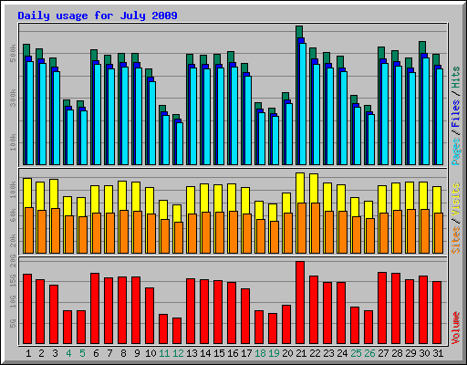
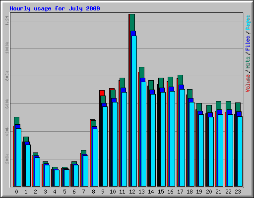

slashdot.jpアクセス統計：2009年7月分 14
今月もよろしくお願いします 部門より
PV/Visit
2009年7月のslashdot.jpのアクセス数は1169万7466ページビュー（PV）でした。なお、先月（5月）のPVは1167万9210PVで、先月とほぼ同水準という結果となりました。
また、7月でもっともPVが多かったのは7月21日（火）、最も少なかったのは7月12日（日）でした。

時間帯別の傾向は先月と同様、12時～13時が最もアクセスが多く、4時～5時の間が最も少ないという結果でした。

記事トップ10
2009年7月の記事トップ10は次のようになりました。
2009年7月記事トップ10：
| 順位 | 記事 | 掲載日 |
| 1 | 「実証できたら100万ドル」と弁護士が発言、法学校出身者に実証されてしまう | 7/20 |
| 2 | 「夏目漱石」は日本の共有文化財産です | 7/13 |
| 3 | 子供の友人がマジコンユーザーだった！ どうすればよい？ | 7/21 |
| 4 | Alan Cox、Linusからの厳しい指摘に「もうたくさんだ」と言い残してTTYのメンテから降りる | 7/30 |
| 5 | ドラゴンクエスト 9、買いましたか？ 感想は ? | 7/13 |
| 6 | 2008年のニートは64万人、フリーターは170万人 | 7/5 |
| 7 | 「淫」「呪」「艶」「賭」などは不適切な漢字？ | 7/17 |
| 8 | 家電・パソコンの無料引取業者、どう思う？ | 7/23 |
| 9 | 児童ポルノ法改正案国会審議入り、与野党修正協議中 | 7/7 |
| 10 | OpenOffice.org導入の会津若松市が、ノウハウをまとめCCで公開 | 7/19 |
Referrerのトップ10は下記の通り。先月と比べ大きな変動はありません。
Referrerトップ10：
| 順位 | アクセス数 | 割合 | Refferrer |
| 1 | 666120 | 5.69% | http://www.google.co.jp/search |
| 2 | 122225 | 1.04% | http://search.yahoo.co.jp/search |
| 3 | 121006 | 1.03% | http://www.google.com/search |
| 4 | 106994 | 0.91% | http://www.google.co.jp/ig |
| 5 | 91828 | 0.79% | http://ezsch.ezweb.ne.jp/search/ezGoogleMain.php |
| 6 | 78022 | 0.67% | http://www.google.co.jp/reader/view/ |
| 7 | 46617 | 0.40% | http://ezsch.ezweb.ne.jp/search/ |
| 8 | 38910 | 0.33% | http://www.google.com/reader/view/ |
| 9 | 36610 | 0.31% | http://reader.livedoor.com/reader/ |
| 10 | 33824 | 0.29% | http://www.google.co.jp/ |
また、Google Analyticsによる分析によると、slashdot.jpへの到達経路トップ10は下記のようになっています。
Referrer上位トップ10：
| 順位 | Referrer元 | 割合 |
| 1 | Google検索 | 42.68% |
| 2 | URL入力/ブックマークなど直接移動 | 21.57% |
| 3 | google.co.jp/（Google検索以外） | 7.30% |
| 4 | Yahoo検索 | 3.81% |
| 5 | google.com（Google検索以外） | 1.67% |
| 6 | セキュリティホールmemo | 1.49% |
| 7 | はてなブックマーク | 1.21% |
| 8 | 連邦 | 0.86% |
| 9 | livedoor Reader | 0.85% |
| 10 | ー｀)＜淡々と更新し続けるぞ雑記。ωもみゅもみゅ | 0.59% |
今月のslashdot.jpへ至る検索キーワードは下記のとおり。4位の「日蝕」は7月22日に起きた日食のストーリー、7位の「pt2」はアースソフトのPC用デジタルチューナー「PT2」の記事関連の検索キーワードと思われます。
検索キーワードトップ10：
| 順位 | アクセス数 | 割合 | キーワード |
| 1 | 27521 | 2.34% | slashdot |
| 2 | 10044 | 0.85% | スラッシュドット |
| 3 | 6966 | 0.59% | スラド |
| 4 | 5706 | 0.48% | 日蝕 |
| 5 | 5080 | 0.43% | j |
| 6 | 4188 | 0.36% | pt2 |
| 7 | 3225 | 0.27% | /.j |
| 8 | 2717 | 0.23% | イケメンホイホイ |
| 9 | 2610 | 0.22% | 9月 連休 |
| 10 | 2143 | 0.18% | 射精 |
ユーザーエージェントについては、先月41.69％だったFirefox 3.0が20.37％に減り、6月30日にリリースされたFirefox 3.5が21.98％とトップに踊り出るという結果になりました。また、IE 6.0/7.0の割合は先月とほぼ変化がありませんが、IE8は先月の4.37％から4.96％と、若干シェアを伸ばしています。
User Agentsトップ10：
| 順位 | アクセス数 | 割合 | User Agents |
| 1 | 2570712 | 21.98% | Browser: Firefox 3.5 |
| 2 | 2382561 | 20.37% | Browser: Firefox 3.0 |
| 3 | 1541194 | 13.18% | Browser: MSIE 6.0 |
| 4 | 921134 | 7.87% | Browser: MSIE 7.0 |
| 5 | 579985 | 4.96% | Browser: MSIE 8.0 |
| 6 | 578906 | 4.95% | Browser: Safari |
| 7 | 572330 | 4.89% | Browser: Sleipnir |
| 8 | 428325 | 3.66% | Browser: Opera 9 |
| 9 | 329444 | 2.82% | Browser: Google Chrome 2.0 |
| 10 | 286190 | 2.45% | Mobile: KDDI |
Google Analyticsによると、slashdot.jp訪問者の使用環境（OSとブラウザの組み合わせ）は下記のとおりだそうです。
OS＆ブラウザ環境：
| 順位 | OS＆ブラウザ | 割合 |
| 1 | Internet Explorer / Windows | 39.02% |
| 2 | Firefox / Windows | 35.00% |
| 3 | Safari / Macintosh | 7.54% |
| 4 | Chrome / Windows | 5.04% |
| 5 | Opera / Windows | 3.49% |
| 6 | Firefox / Macintosh | 3.47% |
| 7 | Firefox / Linux | 2.78% |
| 8 | Mozilla / Linux | 0.69% |
| 9 | Safari / Windows | 0.66% |
| 10 | Safari / iPhone | 0.46% |
| 11 | Firefox / FreeBSD | 0.22% |
| 12 | Mozilla / Windows | 0.19% |
| 13 | Mozilla Compatible Agent / iPhone | 0.15% |
| 14 | Mozilla Compatible Agent / (not set) | 0.13% |
| 15 | Opera / Macintosh | 0.12% |
| 16 | SeaMonkey / Windows | 0.11% |
| 17 | Opera / Linux | 0.10% |
| 18 | Safari / iPod | 0.09% |
| 19 | Camino / Macintosh | 0.07% |
| 20 | Firefox / SunOS | 0.05% |
また、アクセス元のネットワークトップ20は以下。なお、1位の「japan network information center」は、IPアドレスからの逆引きができなかったものが含まれているので、実質的には「その他」に該当すると思われます。
利用ネットワーク：
| 順位 | ネットワーク | 割合 |
| 1 | japan network information center | 36.00% |
| 2 | ntt communications corporation | 14.14% |
| 3 | ucom corp. | 4.37% |
| 4 | kddi corporation | 3.97% |
| 5 | fujitsu limited | 3.35% |
| 6 | ocn provided by ntt-communications which is isp | 2.38% |
| 7 | nec biglobe ltd. | 2.25% |
| 8 | japan nation-wide network of softbank bb corp. | 2.18% |
| 9 | k-opticom corporation | 1.77% |
| 10 | so-net entertainment corporation | 1.76% |
| 11 | asahi net inc. | 1.59% |
| 12 | internet initiative japan inc. | 1.58% |
| 13 | @home network japan | 1.48% |
| 14 | japan nation-wide network of softbank bb corp | 1.45% |
| 15 | fujitsu ltd. | 1.16% |
| 16 | emobile ltd. | 1.01% |
| 17 | softbank bb corp | 0.95% |
| 18 | asahi net | 0.92% |
| 19 | hitachi, ltd | 0.87% |
| 20 | vectant ltd. | 0.79% |
全ユーザーのうち、初めて/.Jを訪れたのは29.45％。リピーターは70.55％でした。
新規ユーザーとリピーター：
| 順位 | ユーザー種別 | 割合 |
| 1 | Returning Visitor | 70.55% |
| 2 | New Visitor | 29.45% |
なお、モデレーションやコメントに関する統計グラフはSourceForge.JPのSlashdot JapanプロジェクトWikiページに掲載していますので、こちらもご覧ください。
Firefox3.0→3.5 (スコア:3, 興味深い)
1 2570712 21.98% Browser: Firefox 3.5
2 2382561 20.37% Browser: Firefox 3.0
と一月で半数以上が3.5にアップグレードしたのですね。月の途中まで3.0を使っていた人も多数いるだろうから実態はもっと3.5にアップグレードしているんでしょう。この対応の早さは凄い。これはとりあえず新しいものを試したいという人が多いのか、Firefoxのバグ取りに対する信頼が醸成されているのか、はたまた自動アップデートがあるのでそれに従っただけなのか。面白いところです。来月の統計で3.5と3.0の関係がどうなっているか楽しみです。